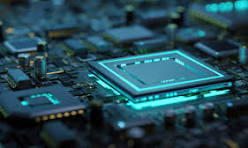

Info about Pc Parts
When building your own PC, you need to understand why each piece of the hardware puzzle – that’s the processor, motherboard, memory, storage, and a myriad of other parts – are what they are, why they’re there, and why they’re important in order to make good decisions about your choices. Are these components compatible? Do they provide the performance and features you need? For the kind of use you intend to put the PC through – whether you intend to game, use it for work, for school, or any other use?
Cpu

- The processor is what makes the computer run. It is the Central Processing Unit (CPU), the centre of the computer that carries out the instructions. This part is mostly responsible for performing calculations and manipulating information as part of the instruction set to complete a certain task for the programs running on the computer.
Gpu

- A GPU, or graphics processing unit, often called a graphic card, is a specialized electronic circuit that rapidly manipulates and alters memory to accelerate the creation of images in a frame buffer intended for output to a display device. It is used, for example, to help render graphics in video games, in a graphical user interface (GUI), and in image and video editing programs.
Ram

- Random access memory (or system memory or RAM) is a type of computer memory that can be accessed randomly, that is to say, any byte of memory can be accessed without touching the previous bytes. RAM is used by the processor to store information (data) and retrieve it quickly. It is a type of volatile memory, that is, whose content is deleted when the computer is turned off. Without RAM, the entire computer system would no longer perform its tasks: the CPU can not effectively process instructions without drawing on system memory. RAM is primarily assigned to tasks that are currently being processed, which is why it is also called working or main memory. For example, when you work on a document and open a photo at the same time, the system memory manages the memory needed by the CPU so that you can switch between the two tasks, without interruption.